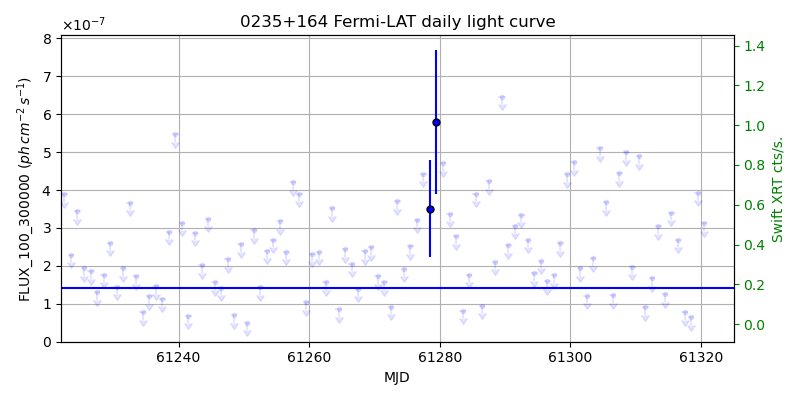
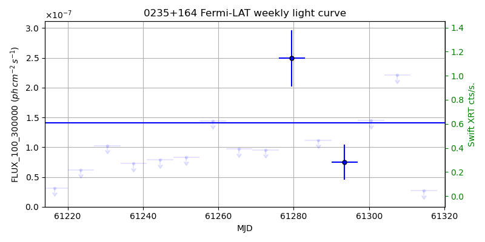
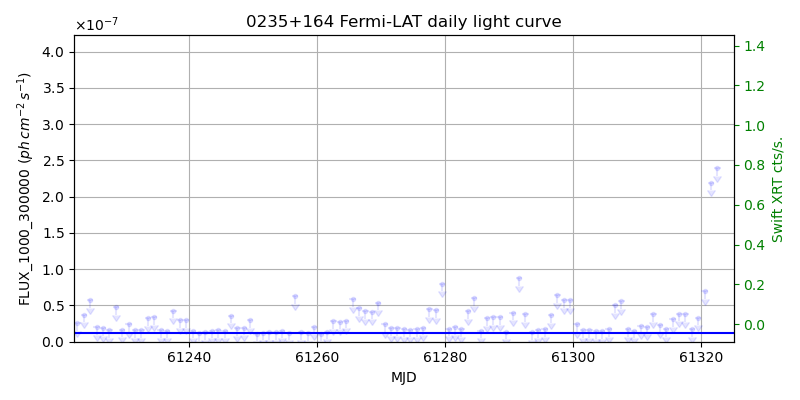
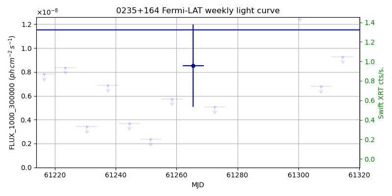

LAT Lightcurve site: https://fermi.gsfc.nasa.gov/ssc/data/access/lat/msl_lc/source/0235p164
Swift site: https://www.swift.psu.edu/monitoring/source.php?source=PKS0235+164
NED: Query
Time of last update of this page: UT: 2026-10-10 15:13 (MJD: 61323.634)
| Property | Value |
|---|---|
| R.A. | 2:38:38.88 |
| Dec. | 16:36:57.6 |
| z | 0.940 |
| 3FGL SpectrumType | LogParabola |
| 3FGL PL Index | |
| 3FGL Flux_100_300000 | 1.41e-07 1 / (s cm2) |
| 3FGL Flux_1000_300000 | 1.15e-08 1 / (s cm2) |
| 3FGL Flux >200 GeV | 1.16e-11 1 / (s cm2) |
| 3FGL Extrap. Crab >200 GeV | 0.05 |
| 3FGL Flux After EBL Absorption >200GeV | 2.41e-13 1 / (s cm2) |
| 3FGL EBL Crab Fraction >200GeV | 0.00 |

| MJD | dMJD | Flux | dFlux | Frac3FGL | FracCrab>200GeV | EBLFracCrab>200GeV |
|---|---|---|---|---|---|---|
| 61318.50 | 0.50 | 6.43e-08 | 0.00e+00 | 0.00 | 0.00 | 0.00 |
| 61319.50 | 0.50 | 3.93e-07 | 0.00e+00 | 0.00 | 0.00 | 0.00 |
| 61320.50 | 0.50 | 3.13e-07 | 0.00e+00 | 0.00 | 0.00 | 0.00 |
| 61321.50 | 0.50 | 1.80e-06 | 0.00e+00 | 0.00 | 0.00 | 0.00 |
| 61322.50 | 0.50 | 2.36e-06 | 0.00e+00 | 0.00 | 0.00 | 0.00 |

| MJD | dMJD | Flux | dFlux | Frac3FGL | FracCrab>200GeV | EBLFracCrab>200GeV |
|---|---|---|---|---|---|---|
| 61286.50 | 3.50 | 1.12e-07 | 0.00e+00 | 0.00 | 0.00 | 0.00 |
| 61293.50 | 3.50 | 7.50e-08 | 2.92e-08 | 0.53 | 0.03 | 0.00 |
| 61300.50 | 3.50 | 1.45e-07 | 0.00e+00 | 0.00 | 0.00 | 0.00 |
| 61307.50 | 3.50 | 2.21e-07 | 0.00e+00 | 0.00 | 0.00 | 0.00 |
| 61314.50 | 3.50 | 2.73e-08 | 0.00e+00 | 0.00 | 0.00 | 0.00 |

| MJD | dMJD | Flux | dFlux | Frac3FGL | FracCrab>200GeV | EBLFracCrab>200GeV |
|---|---|---|---|---|---|---|
| 61318.50 | 0.50 | 1.75e-08 | 0.00e+00 | 0.00 | 0.00 | 0.00 |
| 61319.50 | 0.50 | 3.31e-08 | 0.00e+00 | 0.00 | 0.00 | 0.00 |
| 61320.50 | 0.50 | 6.99e-08 | 0.00e+00 | 0.00 | 0.00 | 0.00 |
| 61321.50 | 0.50 | 2.19e-07 | 0.00e+00 | 0.00 | 0.00 | 0.00 |
| 61322.50 | 0.50 | 2.39e-07 | 0.00e+00 | 0.00 | 0.00 | 0.00 |

| MJD | dMJD | Flux | dFlux | Frac3FGL | FracCrab>200GeV | EBLFracCrab>200GeV |
|---|---|---|---|---|---|---|
| 61286.50 | 3.50 | 1.53e-08 | 0.00e+00 | 0.00 | 0.00 | 0.00 |
| 61293.50 | 3.50 | 1.55e-08 | 0.00e+00 | 0.00 | 0.00 | 0.00 |
| 61300.50 | 3.50 | 1.28e-08 | 0.00e+00 | 0.00 | 0.00 | 0.00 |
| 61307.50 | 3.50 | 6.78e-09 | 0.00e+00 | 0.00 | 0.00 | 0.00 |
| 61314.50 | 3.50 | 9.28e-09 | 0.00e+00 | 0.00 | 0.00 | 0.00 |
--------------------------------------------------------- Using user-supplied coords: 2:38:38.88 16:36:57.6 2000 --------------------------------------------------------- FLWO UT night of: 2026-10-11 Local Sid. @ Midnight: 00:55 Sunset (-15.0) (local, UT): 19:04 02:04 Sunrise (-15.0) (local, UT): 05:18 12:18 Moonrise (local, UT): Moonset (local, UT): Moon phase: 0.01 --------------------------------------------------------- AzTime LSID UT Obj_el Obj_az Mn_el Mn_az Sep. --------------------------------------------------------- 19:04 19:58 02:04 0.7 70.4 -16.1 264.2 159.2 19:34 20:29 02:34 6.5 74.3 -22.3 267.8 159.5 20:04 20:59 03:04 12.7 78.0 -28.5 271.5 159.8 20:34 21:29 03:34 19.0 81.6 -34.7 275.4 160.1 21:04 21:59 04:04 25.3 85.3 -40.8 279.7 160.4 21:34 22:29 04:34 31.7 89.0 -46.8 284.6 160.7 22:04 22:59 05:04 38.1 93.1 -52.7 290.5 161.0 22:34 23:29 05:34 44.5 97.5 -58.4 297.7 161.4 23:04 23:59 06:04 50.8 102.7 -63.6 307.3 161.7 23:34 00:29 06:34 56.9 109.1 -68.1 320.3 162.1 00:04 00:59 07:04 62.8 117.4 -71.3 338.2 162.4 00:34 01:29 07:34 68.2 129.0 -72.6 0.4 162.8 01:04 01:59 08:04 72.5 146.2 -71.5 22.7 163.1 01:34 02:30 08:34 74.9 170.7 -68.3 40.8 163.5 02:04 03:00 09:04 74.4 198.0 -63.9 54.1 163.8 02:34 03:30 09:34 71.2 220.2 -58.7 63.8 164.2 03:04 04:00 10:04 66.5 235.3 -53.1 71.2 164.5 03:34 04:30 10:34 60.9 245.6 -47.3 77.2 164.9 04:04 05:00 11:04 54.9 253.2 -41.4 82.2 165.2 04:34 05:30 11:34 48.7 259.1 -35.3 86.6 165.5 05:04 06:00 12:04 42.4 264.0 -29.2 90.6 165.8 05:18 06:14 12:18 39.5 266.0 -26.5 92.4 166.0 --------------------------------------------------------- Dark hours >55 deg.: 4.65 srcstart (UT): 2026-10-11 06:24 srcend (UT): 2026-10-11 11:03